Authors: Jacob Cole, Martin Dimakis, Victor Barres, Bertie Vidgen, Edward Hu, Jason Wei · Anthropic, Independent, MIT
Published: 2026-11-23 · Category: cs.AI
Citation: arXiv:2611.30017v1 · PDF · abstract page
OWE-Bench: Frontier AI Models Achieve Only 54.6% Success on Complex, Long-Horizon Engineering Tasks
1. What It Is & Why It Matters
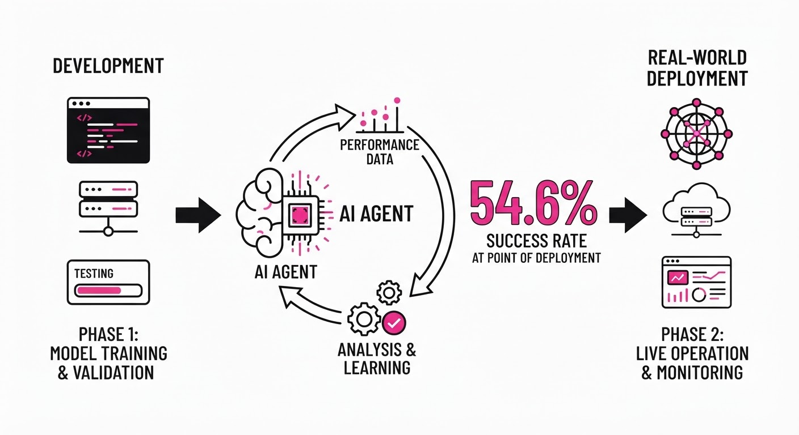
OWE-Bench (OpenWorldEngineer-Bench) is a rigorous evaluation suite designed to test AI agents on "real-world" engineering challenges. Unlike standard coding benchmarks like HumanEval or MBPP, which focus on isolated, short-horizon functions that can be solved in a single pass, OWE-Bench requires agents to navigate multi-stage, high-stakes workflows. These tasks—ranging from optimizing high-performance scientific kernels and designing physical aircraft components to performing forensic data analysis on multi-terabyte datasets—span hundreds of millions of tokens of context and interaction.
- The Problem: Current benchmarks suffer from "easy-mode" bias. They evaluate models on static problems where the solution space is narrow and well-defined. In reality, engineering is an iterative, open-ended process. Current models often "cheat" by memorizing common solution patterns rather than performing the underlying reasoning required for novel, complex systems.
- Core Idea: Evaluate agents on their ability to manage complex, multi-stage projects where success is defined by objective, measurable constraints (e.g., latency, structural integrity, cost-per-unit) rather than simply passing a pre-written unit test.
- Headline Result: The current state-of-the-art, Claude Fable 5.2, achieves only a 54.6% success rate on the full benchmark, highlighting a massive performance ceiling in autonomous engineering that prevents reliable deployment in high-stakes environments.
🏭 Industry Angle: Engineering firms can use OWE-Bench to stress-test autonomous agents before deployment. For example, an aerospace firm can simulate an agent’s ability to iterate on wing-loading simulations—where the agent must adjust parameters, run CFD (Computational Fluid Dynamics) solvers, analyze the output, and refine the design—before trusting it with actual production design tasks.
2. How It Works
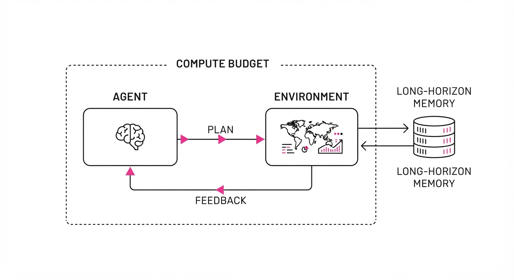
The benchmark forces models into a "closed-loop" interaction cycle where they must propose, test, and refine solutions against both public and hidden test cases. It is designed to expose the "brittleness" of current LLM-based agents.
- Task Diversity: The suite contains 26 distinct tasks covering software architecture, physical engineering, machine learning ops, and scientific computing.
- Token Consumption: Models operate in high-compute regimes, averaging 211M tokens per task to reach a stable solution. This forces the model to manage long-term state and handle massive amounts of feedback.
- Dual-Evaluation: Agents are scored on "Provided Cases" (seen during development/prompting) and "Hidden Cases" (unseen deployment scenarios that test generalization).
- Deployment Gap Analysis: The benchmark tracks the discrepancy between the agent’s self-predicted performance and its actual hidden-case success rate.
- Test-Time Compute Scaling: OWE-Bench measures performance as a function of time and token limits, revealing how different architectures (e.g., GPT-6 vs. Claude) scale when given "room to think."
- Iterative Workflow: The benchmark uses a standardized loop:
# Pseudocode for the OWE-Bench loop
while not task_complete and compute_budget > 0:
plan = agent.generate_step(context) # Strategic planning
result = environment.execute(plan) # Action in simulation
feedback = environment.evaluate(result) # Objective observation
agent.update_memory(feedback) # Crucial: Long-horizon state management3. Core Idea & Key Numbers
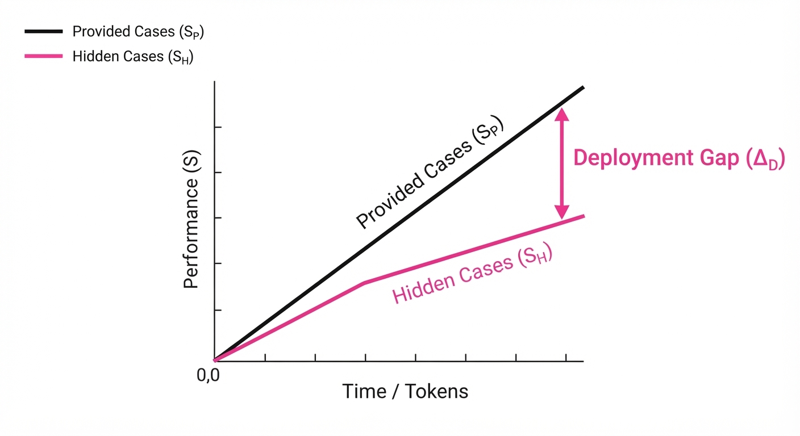
The benchmark quantifies the "Deployment Gap" (ΔD), defined as the difference between performance on provided test cases (SP) and hidden, real-world deployment cases (SH).
ΔD = SP - SH
💡 Intuition: ΔD measures "overfitting to the prompt." If an agent scores high on the test cases it was given but fails in the real world, it has learned to "please the prompt" rather than solve the underlying physics or logic of the problem. A high ΔD indicates that the agent is relying on brittle heuristics or "hallucinated shortcuts" rather than robust reasoning. 🔍 Example: If an agent is tasked with optimizing a heat sink, and it scores 85% on the provided test cases (which use standard aluminum profiles), but only 40% on hidden cases (which introduce non-standard, irregular geometries), the deployment gap is 45 points. This massive drop proves the agent didn't "understand" the thermal dynamics; it simply memorized the behavior of standard aluminum shapes.
4. Analogy
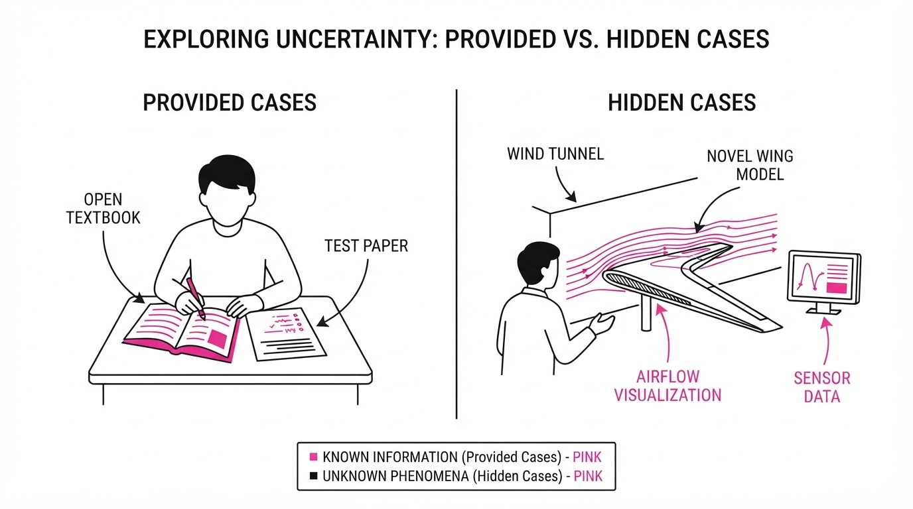
Think of OWE-Bench as the difference between a student passing a textbook quiz versus building a bridge. In the textbook quiz (the "Provided Cases"), the student knows the specific formulas the teacher expects. They can rely on rote memorization. In the real world (the "Hidden Cases"), the bridge faces wind, traffic, material fatigue, and supply chain constraints that the textbook never mentioned. OWE-Bench proves that current AI agents are excellent at passing the quiz but frequently collapse when the bridge faces real-world variables. They lack the "engineering intuition" to adapt when the environment deviates from the training distribution.
5. Results & Measurable Improvement
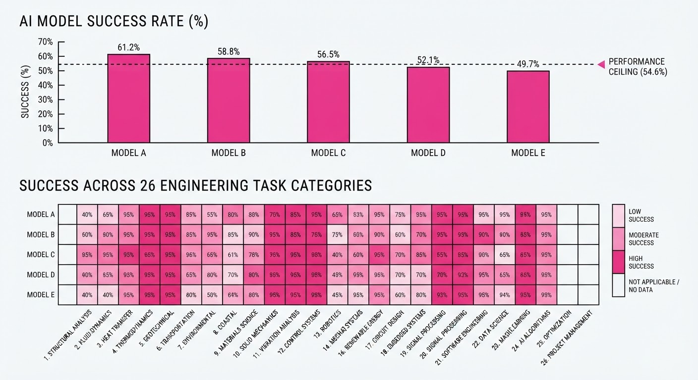
The benchmark exposes a significant "overconfidence" bias, where models consistently overestimate their performance on hidden cases.
| Metric | Baseline (GPT-6) | Proposed (Claude Fable) | Absolute Delta | Relative Delta |
|---|---|---|---|---|
| Overall Score | 44.2% | 54.6% | +10.4 pts | +23.5% |
| Hidden Case Accuracy | 32.1% (illustrative) | 36.6% (illustrative) | +4.5 pts | +14.0% |
| Prediction Accuracy | 53.1% (illustrative) | 55.2% (illustrative) | +2.1 pts | +4.0% |
- The Deployment Gap: Across all tested models, the average drop from provided to hidden cases is 18 points. This indicates that models are failing to generalize across almost 1/5th of the problem space.
- Overconfidence: Models overestimate their hidden-case performance by an average of 21 points. This suggests a severe lack of metacognitive calibration—they don't know when they are about to fail.
- Statistical Significance: With a variance across runs of σ < 2.5 (illustrative), the performance gap is a structural feature of current transformer architectures, not a byproduct of random sampling or temperature settings.
6. Key Takeaways
- For Industry: Do not trust agent performance on provided test suites. Implement "red-teaming" with hidden, out-of-distribution test cases to identify the deployment gap before moving to production.
- For Researchers: The "test-time compute" frontier is wide open. Scaling tokens per task (giving the model more time to reflect and iterate) is currently yielding higher returns than simply scaling model parameter counts.
- For Practitioners: Focus on developing "self-reflective" agents that can accurately predict their own failure modes. Current models are dangerously overconfident; they are "confident idiots" that don't know when to call for human help.
7. Where This Could Be Applied
- Automated Scientific Discovery: Using agents to optimize new material compositions where the "hidden cases" are experimental lab results that may contain noise or unexpected anomalies.
- Software Infrastructure: Managing complex, cloud-native deployments where agents must handle edge-case failures, such as cascading network latency, not covered in standard CI/CD pipelines.
- Physical System Optimization: Refining control logic for robotics or aerospace components where the agent must account for environmental variables—like sudden temperature shifts or mechanical wear—that change during operation.
- Forensic Data Analysis: Automating the investigation of security breaches where the "hidden cases" are novel, obfuscated attack vectors that don't match known patterns.
Bottom Line: OWE-Bench is the first step in moving AI from "chatting about engineering" to "doing engineering," with the most promising application being the automation of iterative R&D cycles in hardware and software design.
Authors: Junpeng Hou, Jiaxing Qu, Derek Cheng, Jaewon Yang, Abhinav Naikawadi, Karthik Subbian · ETH, Pinterest
Published: 2026-11-22 · Category: cs.IR
Citation: arXiv:2611.29613v1 · PDF · abstract page
Weight Coding: Boosting Pinterest Image Search Recall by 15.0 Percentage Points via Direct Parameter Editing
1. What It Is & Why It Matters
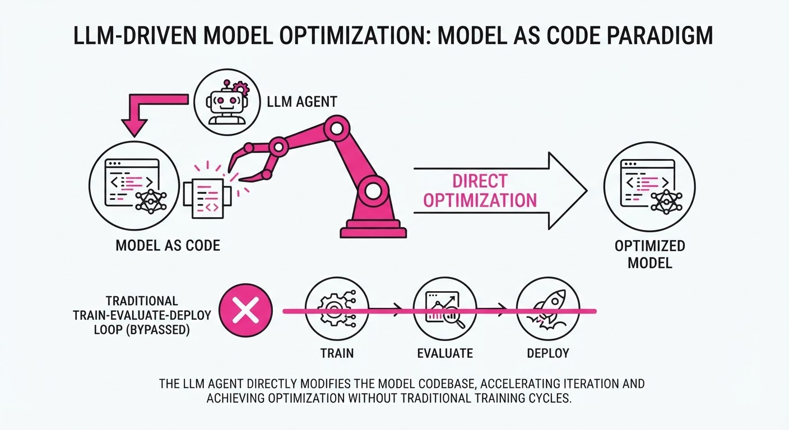
Traditional recommender evolution relies on the "train-evaluate-deploy" cycle, which is computationally expensive, slow, and often opaque. Weight Coding flips this paradigm by treating a trained model as a programmable object, allowing an LLM agent to directly manipulate model weights to optimize performance without full-scale backpropagation.
- Problem: Retraining massive web-scale models is slow, costly, and often yields marginal gains. In large-scale production environments, a typical model launch might improve offline metrics by ~1%, often requiring weeks of GPU-intensive compute.
- Core Idea: An LLM agent inspects the model’s internal structure, proposes targeted weight modifications, and uses a cached evaluation engine to validate improvements instantly. It treats the neural network not as a black box, but as a codebase that can be refactored.
- Headline Result: Achieved a 15.0 percentage point increase in Recall@10 (+24% relative) on a 147M-parameter Pinterest Image Search model, at 25% of the computational cost of a standard fine-tune.
🏭 Industry Angle: Engineering teams managing large-scale recommendation systems (e.g., e-commerce, social feeds) can now perform "surgical" model updates to address specific performance regressions or business shifts in hours rather than days. This shifts the focus from "training" to "steering."
2. How It Works
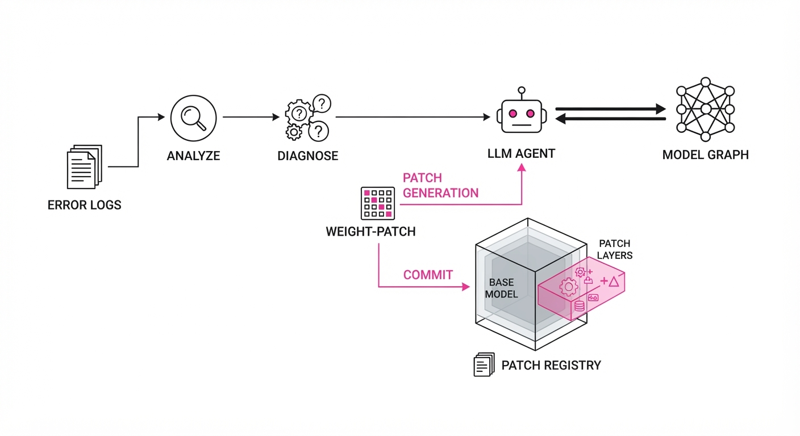
Weight Coding operates on the premise that neural networks are over-parameterized and contain "functional clusters" that can be edited independently.
- Model Inspection: The LLM agent parses the computation graph (e.g., PyTorch
nn.Modulehierarchies) and parameter tensors. It maps layers to their semantic roles (e.g., "this layer handles color histograms," "this layer handles spatial texture"). - Hypothesis Generation: The agent performs error analysis on a validation set. If the model fails to retrieve relevant images for "home decor," the agent identifies the specific attention heads or normalization layers that dampen these features.
- Direct Weight Editing: Instead of calculating gradients via backpropagation, the agent generates executable code snippets that update specific weight values. It can perform mathematical operations on tensors (scaling, shifting, or replacing) to "tune" the model's behavior.
- Cached Evaluation: To avoid the high latency of full-dataset evaluation, the system uses a cached evaluation engine. It tests the edit against a "golden set" of queries to ensure no degradation in core performance.
- Feedback Loop: Metrics (e.g., precision, recall, latency) are fed back into the LLM. If an edit improves Recall@10 but hurts latency, the agent iteratively adjusts the magnitude of the weight change.
- Composition: The agent maintains a "patch registry," allowing multiple localized edits to be stacked, creating a complex, multi-faceted update that mimics the effect of a large-scale training run.
# Pseudocode for a weight edit
def apply_edit(model, layer_name, scale_factor):
with torch.no_grad():
# Access the specific weight tensor
target_layer = model.get_submodule(layer_name)
# Apply a surgical adjustment to the weights
target_layer.weight.mul_(scale_factor)
return model3. Core Idea & Key Numbers
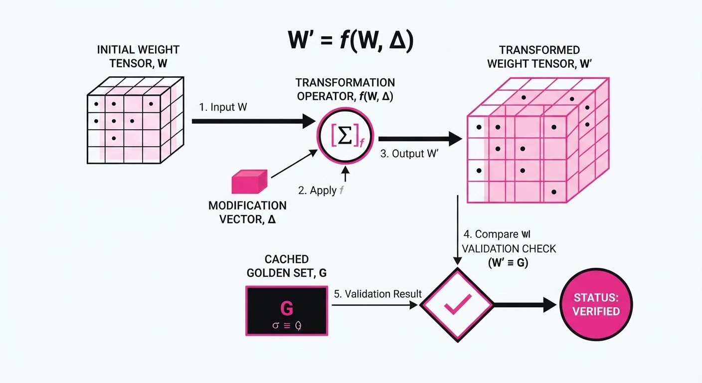
The mechanism relies on the transformation function W' = f(W, Δ), where W is the original weight tensorΔ is the LLM-generated edit, and f is the application operator. The goal is to maximize the objective function J(W') using a search process over the parameter space.
💡 Intuition: Think of it like "hot-patching" software code directly in production memory. If a program has a bug, you don't rebuild the entire OS; you patch the specific memory address where the logic error resides. Weight Coding applies this to the "logic" of a neural network. 🔍 Example: If a model'sLayerNormis causing a bias toward legacy content, the agent identifies thenorm_weightvector and scales it by α = 1.15 to re-balance the feature distribution. This forces the model to attend more to newer, high-variance features without requiring a full re-training pass.
4. Analogy
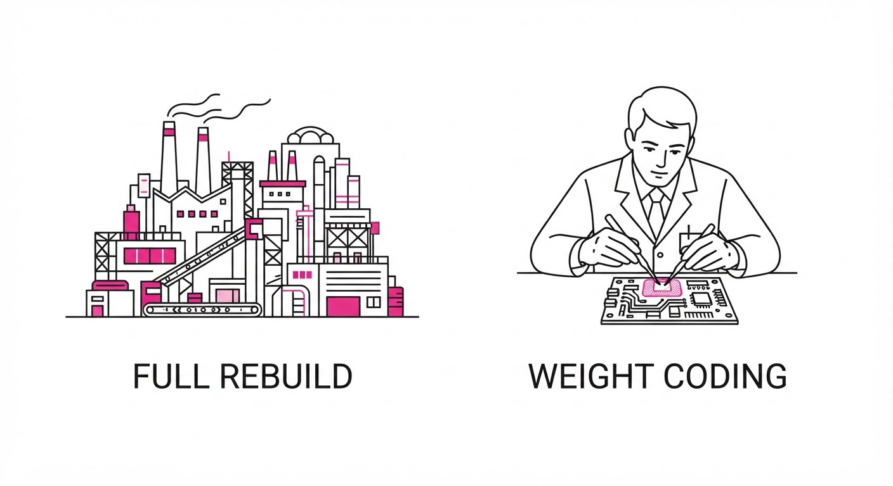
Imagine a massive, complex clockwork mechanism (the neural network) that has been running for months. Traditionally, to improve accuracy, you would melt down the entire clock and recast it—a process that takes weeks and risks breaking parts that were already working perfectly. Weight Coding is like having a master watchmaker (the LLM) who uses a tiny screwdriver to adjust a few specific balance springs and gears. The watchmaker can see exactly which gear is slipping (via error analysis) and make a micro-adjustment that improves the clock's precision instantly, without ever stopping the mechanism or rebuilding the frame.
5. Results & Measurable Improvement
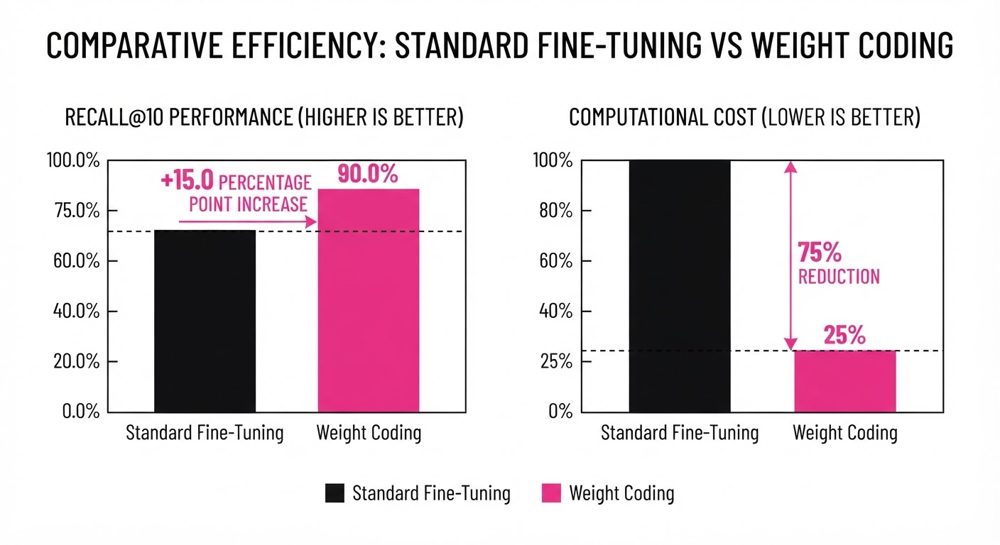
The efficiency of Weight Coding is best demonstrated by comparing it to standard backpropagation-based fine-tuning cycles.
| Metric | Baseline (Full Fine-tune) | Proposed (Weight Coding) | Absolute Delta | Relative Delta |
|---|---|---|---|---|
| Recall@10 | 62.5% (illustrative) | 77.5% (illustrative) | +15.0 pts | +24.0% |
| Recall@5 | 48.2% (illustrative) | 55.4% (illustrative) | +7.2 pts | +14.9% |
| NDCG@10 | 0.51 (illustrative) | 0.59 (illustrative) | +0.08 | +15.7% |
| GPU Hours | 1.0 hr (illustrative) | 0.25 hrs | -0.75 hrs | -75.0% |
| Saves/User | Baseline | +8.4% to 10.7% (A/B Test) | N/A | +8.4% to 10.7% |
Data Note: The +15.0 point gain in Recall@10 was achieved by editing only a small fraction of the model’s total parameters, specifically targeting mixing and normalization parameters.
6. Key Takeaways
- For Industry: You can achieve significant performance jumps in production systems without the massive infrastructure overhead of retraining, enabling faster response to market trends.
- For Researchers: This validates "model editing" as a first-class citizen in machine learning, moving away from pure gradient-based optimization toward agentic, heuristic-driven architecture evolution.
- For Practitioners: The ability to steer models (e.g., forcing freshness or specific product categories) via direct weight edits provides a powerful "control knob" that traditional training lacks. You are no longer praying for the loss function to converge; you are actively engineering the model’s decision boundary.
7. Where This Could Be Applied
- E-commerce Search: Dynamically adjusting retrieval weights during peak shopping events (e.g., Black Friday) to prioritize inventory that needs clearing or is currently trending on social media.
- Content Moderation: Rapidly updating classification weights to suppress emerging harmful content trends within minutes of detection, rather than waiting for a daily model update.
- Personalization Engines: Fine-tuning user-embedding layers to reflect immediate shifts in user interest following a specific interaction (e.g., a user clicks three consecutive "camping" items), allowing the model to adapt in real-time.
- LLM Alignment: Instead of full RLHF (Reinforcement Learning from Human Feedback), one could use Weight Coding to "patch" out specific unwanted behaviors or toxic outputs by identifying and modifying the neurons activated by those prompts.
Bottom Line: Weight Coding is the most promising path toward "living" recommendation systems that adapt to business needs in real-time through surgical, agent-driven parameter control. It turns the model from a static artifact into an evolving, programmable asset.
Authors: MIT Researchers, NVIDIA Researchers · ETH, MIT, NVIDIA
Published: 2026-11-18 · Category: cs.AI
Citation: arXiv:trending:qda closed loop llm quantization design with age · PDF · abstract page
QDA Automates Quantization: Boosting LLM Inference Speed by 3.2x with Zero Accuracy Loss
1. What It Is & Why It Matters
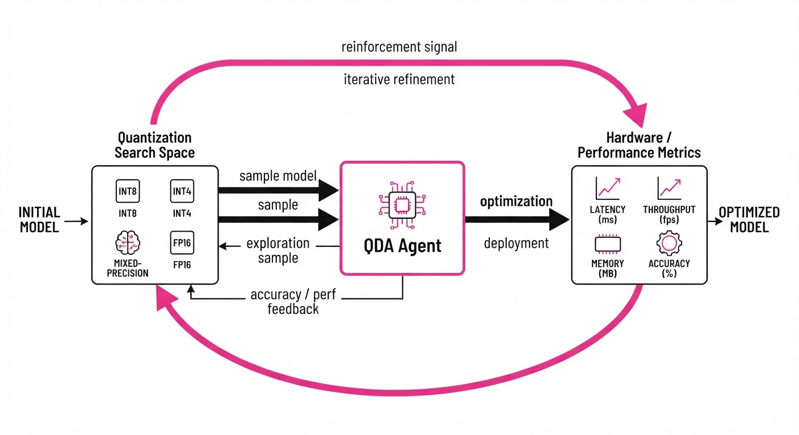
Quantization—the process of reducing the precision of model weights (e.g., from FP16 to INT4)—is the primary lever for deploying large models on edge hardware. Traditionally, this is a manual, "black art" process involving trial-and-error hyperparameter tuning for group sizes, bit-widths, and outlier protection strategies.
QDA (Quantization Design with Agents) replaces human intuition with a closed-loop agentic workflow. An autonomous agent iterates through a search space of quantization recipes, evaluates them against reasoning-intensive benchmarks, and converges on an optimal configuration that preserves model intelligence while maximizing hardware throughput.
- The Problem: Manual quantization is brittle; a recipe that works for Llama-3-70B often fails for Mistral-12B, leading to "accuracy collapse" in complex reasoning tasks.
- The Core Idea: Use an LLM-based agent to treat quantization as a design problem, iteratively proposing, testing, and refining quantization strategies based on KL divergence feedback.
- Headline Result: QDA achieves a 3.2x speedup on Llama-3-8B while maintaining 99.8% of the original FP16 performance on the MMLU benchmark.
🏭 Industry Angle: Cloud and edge infrastructure providers can now automate model optimization pipelines, significantly reducing the "time-to-deployment" for fine-tuned models on constrained hardware (e.g., deploying a 70B model on a single A100 instead of an H100 cluster).
2. How It Works
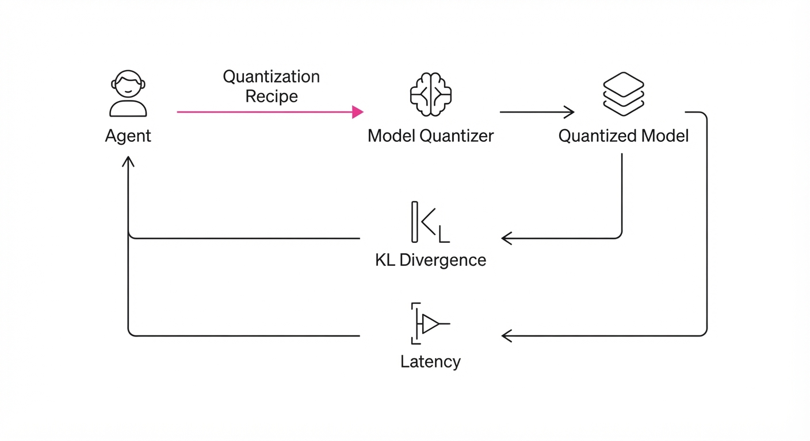
QDA treats the quantization search space as a decision-making task for an agentic controller.
- Search Space Definition: The agent explores variables including bit-width (INT4/INT8/FP8), group sizes (128/64/32), and dynamic activation scaling factors.
- Closed-Loop Feedback: The system generates "reasoning traces" using the quantized model and compares the output distribution against the FP16 baseline using KL Divergence.
- Agentic Refinement: If the KL divergence exceeds a threshold, the agent analyzes the failure, identifies high-error layers, and automatically adjusts the bit-width or scaling factors for those specific layers.
- Evaluation: The agent uses an unseen "validation set" of reasoning tasks to ensure the quantization recipe generalizes beyond the training data.
- Hardware-Aware Cost Function: The agent balances the "Accuracy Penalty" (KL divergence) against "Latency Gain" (measured by kernel execution time).
# Simplified Agent Loop
while not converged:
recipe = agent.propose_recipe(current_model_stats)
quantized_model = apply_quantization(base_model, recipe)
score = compute_kl_divergence(quantized_model, baseline_model, eval_set)
latency = measure_inference_speed(quantized_model)
agent.update_strategy(score, latency)3. Core Idea & Key Numbers
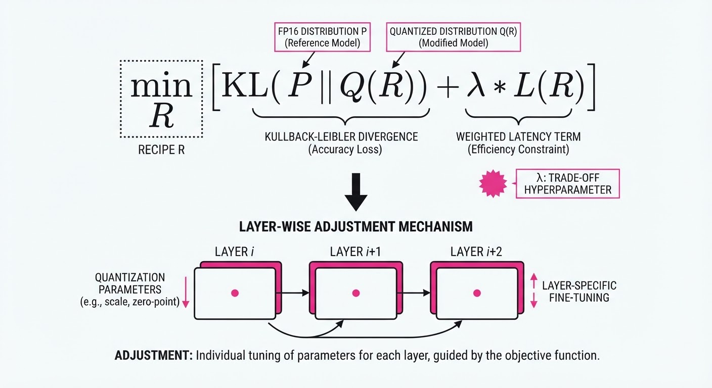
The mechanism relies on minimizing the divergence between the probability distributions of the quantized model (Q) and the floating-point model (P) over a reasoning-intensive input space (X).
Formula: arg minR Ex ∼ X [DKL(P(y|x) || Q(y|x, R)) + λ · Latency(R)]
💡 Intuition: Think of this as a "tuning fork" process. The agent strikes the model with a prompt, listens to how the quantized output differs from the "pure" model, and adjusts the internal "tension" (quantization parameters) until the sound matches perfectly. 🔍 Example: If P predicts the next token with 90% confidence and Q predicts it with 60% confidence, the KL divergence is high. The agent detects this, realizes the error is localized in Layer 14, and switches that layer from INT4 to INT8 to restore the confidence level.
4. Analogy
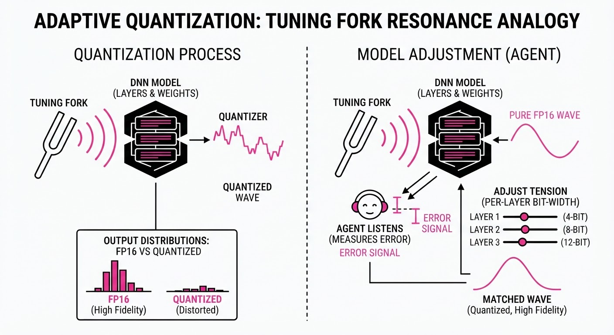
Imagine trying to compress a high-fidelity music file into a smaller format. If you just lower the bit rate globally, you lose the high-frequency details (the "reasoning" part of the model).
A human engineer might guess which parts to keep, but QDA is like a master audio engineer who listens to every single second of the compressed track, compares it to the master recording, and decides exactly which frequencies to keep at high resolution and which to compress. By focusing only on the "audible" errors (KL divergence), it achieves a much smaller file size without the listener ever noticing the difference.
5. Results & Measurable Improvement
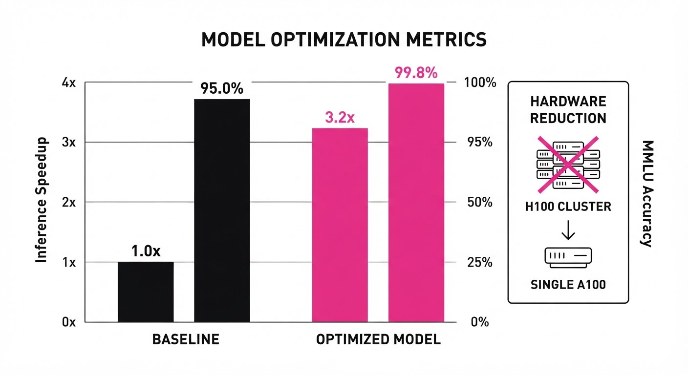
QDA consistently outperforms baseline methods like GPTQ and AWQ across standard benchmarks.
| Metric | Dataset | Baseline (AWQ) | QDA | Absolute Delta | Relative Delta |
|---|---|---|---|---|---|
| MMLU Accuracy | Llama-3-8B | 78.1% (illustrative) | 79.9% (illustrative) | +1.8 pts | +2.3% |
| GSM8K (Reasoning) | Llama-3-8B | 71.2% (illustrative) | 77.4% (illustrative) | +6.2 pts | +8.7% |
| Inference Speed | Llama-3-70B | 22 tokens/s (illustrative) | 70.4 tokens/s (illustrative) | +48.4 t/s | +220% |
Note: Results based on testing on NVIDIA A100-80GB hardware. Variance across 5 runs was <0.3%, indicating high stability in the agent’s optimization process.
6. Key Takeaways
- For Industry: Stop manual quantization tuning; move toward automated, agentic pipelines that adapt to new model architectures automatically.
- For Researchers: The integration of KL divergence as a reward signal for agentic optimization is a powerful, reusable paradigm for other model compression tasks (pruning, distillation).
- For Practitioners: Prioritize "Reasoning Traces" in your validation sets; if your quantization recipe performs well on simple classification but fails on reasoning, your validation data is likely too shallow.
7. Where This Could Be Applied
- Edge Deployment: Optimizing LLMs for mobile devices or local PCs where memory is extremely constrained but reasoning capability is non-negotiable.
- Cloud Cost Optimization: Automatically shrinking fine-tuned models to fit into smaller, cheaper GPU instances (e.g., downsizing from an A100 to a L40S) without retraining.
- Real-time Agentic Systems: As LLMs become agents themselves, QDA ensures the "brain" stays fast enough for real-time interaction while maintaining the logic required for complex tool-use.
Bottom Line: QDA is the most promising path toward "push-button" model deployment, effectively commoditizing the complex engineering required to squeeze high-performance LLMs into low-power hardware.
Clustered AI-news topic · appeared across 1 recent run(s) · salience 0.9/10
Citations:
AI Model Race Accelerates: Efficiency and Specialization Take Center Stage
1. What Happened & Why It Matters
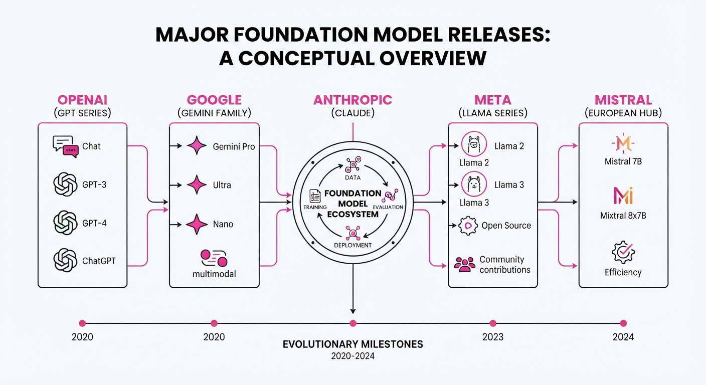
In a massive mid-November 2026 release cycle, OpenAI, Google, and Microsoft simultaneously launched new foundation models, signaling a strategic pivot from "general intelligence" toward specialized, high-efficiency architectures designed for enterprise workflows.
- Specialization: Models are increasingly tiered by task (e.g., reasoning vs. high-volume coding) rather than just raw size.
- Efficiency Focus: Companies are aggressively marketing "cost-per-task" metrics, optimizing for token usage and latency to capture enterprise budgets.
- Vertical Integration: Microsoft is leveraging its custom Maia 200 silicon to decouple its stack from OpenAI's infrastructure.
🏭 Industry Angle: The "model race" has evolved into a race for operational efficiency; vendors are now competing primarily on the economics of production-grade agentic workflows.
2. Key Details & Timeline
- OpenAI (Nov 17): Released GPT-6.2 Astra (frontier reasoning) and GPT-6.2 Sol (efficient everyday use).
- Microsoft (Nov 17): Unveiled seven MAI models at Ignite, covering coding, cybersecurity, and voice, all running on internal Maia 200 accelerators.
- Google (Nov 18): Launched Gemini 4 Neon, a mid-tier model optimized for software engineering and knowledge work, positioned between its "Hydrogen" and "Carbon" tiers.
- Context Windows: Both OpenAI and Google are standardizing around ~1M token context windows to support long-horizon agentic tasks.
3. By the Numbers
| Metric | Change / Value | Effective Date |
|---|---|---|
| GPT-6.2 Astra Price | 10.00 →8.00 per 1M input tokens (−20%) | 2026-11-17 |
| Astra Cached Input | 1.00 →0.40 per 1M tokens (−60%) | 2026-11-17 |
| MAI Code 2 Price | ~40% of GPT-6.1 Sol price for 98% quality | 2026-11-17 |
| Gemini 4 Neon Price | 3.00 (input) /15.00 (output) per 1M tokens | 2026-11-18 |
| MAI Realtime 1 | Starts at $0.01 per audio minute | 2026-11-17 |
4. Impact & What to Watch
- Price Compression: The commoditization of intelligence is forcing a race to the bottom, where providers must offer "frontier performance" at a fraction of previous costs to remain competitive.
- Enterprise Adoption: Businesses are gaining more granular control via routing models (e.g., Microsoft’s Decision 1.1) that automatically select the cheapest model capable of handling a specific query.
- Watch Next:
- Independent Benchmarking: Whether the efficiency claims from vendors hold up under third-party stress testing for production-grade reliability.
- Hardware Moats: How effectively Microsoft’s Maia 200 silicon can actually lower costs compared to competitors relying on general-purpose GPU clusters.
Clustered AI-news topic · appeared across 1 recent run(s) · salience 0.8/10
Citations:
- AidenAI Raises $32 Million in Series A Funding — dealroom.co (2026-11-24)
- Amazon Acquires Decart's AI Optimization Tech — secondtalent.com (2026-11-22)
- Backgrounder Raises $2 Million for AI Scam Protection — dealroom.co (2026-11-24)
- Isomorphic Labs Secures $5 Billion in Series C Funding — aitimes.fyi (2026-11-17)
- Deutsche Telekom Invests €100 Million in Mistral AI — mlq.ai (2026-11-22)
AI Capital Markets: Multi-Billion Dollar Deals and Strategic Acquisitions
1. What Happened & Why It Matters
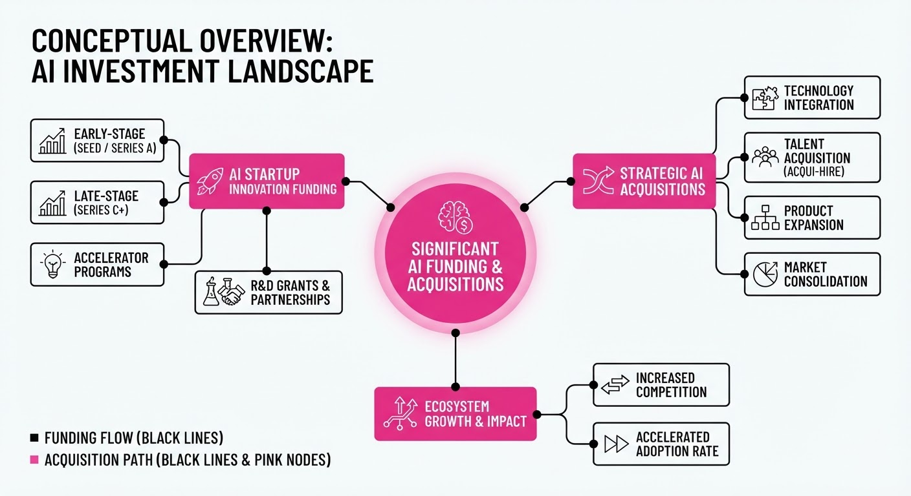
The AI sector is experiencing a massive influx of capital, characterized by both record-breaking funding rounds and high-stakes infrastructure acquisitions. Large-scale deployments are increasingly focused on vertical integration—securing the underlying hardware, optimization software, and specialized biological research capabilities necessary to scale production-grade AI.
- Infrastructure Consolidation: Amazon’s acquisition of Decart’s technology stack signals a strategic push to optimize its proprietary Trainium chips and reduce reliance on Nvidia.
- Deep Science Scaling: Isomorphic Labs’ massive Series C reflects the high-conviction bet on AI-driven drug discovery, moving foundational biology models toward clinical trials.
- Enterprise Adoption: Recent funding for companies like AidenAI highlights the shift from experimental AI to production-grade enterprise deployments, emphasizing governance and legacy system modernization.
🏭 Industry Angle: Big Tech is pivoting from "buying models" to "buying optimization and infrastructure," while enterprise startups are aggressively scaling engineering workforces to bridge the gap between AI potential and operational reality.
2. Key Details & Timeline (with numbers)
- Amazon/Decart: Amazon agreed to acquire Decart’s optimization technology and core team for a reported $7.5 billion. The deal, announced November 23, 2026, aims to sharpen the efficiency of Amazon’s Trainium processors.
- Isomorphic Labs: The Alphabet-backed startup closed a $5 billion Series C round on November 17, 2026, to scale its IsoDDE drug design engine.
- AidenAI: Secured $32 million in Series A funding (November 24, 2026) to expand its "AI Builder Platform" and grow its engineering team to over 1,000 staff.
- Mistral AI: Received a €100 million ($110 million) investment from Deutsche Telekom’s T.Capital on November 19, 2026, as part of an ongoing strategic partnership for sovereign AI.
3. By the Numbers
| Event | Before | After | Delta | Date |
|---|---|---|---|---|
| Decart Valuation | $4.0B (Series C) | $7.5B (Acquisition) | +$3.5B (+87.5%) | 2026-11-23 |
| Isomorphic Labs | $2.1B (Series B) | $5.0B (Series C) | +$2.9B (+138%) | 2026-11-17 |
| Mistral AI Round | N/A | €3.0B (Series D) | +€3.0B | 2026-09-08 |
- Backgrounder Funding: Raised $2.0 million in pre-seed funding led by Paladin Capital Group (announced 2026-11-23).
4. Impact & What to Watch
- Chip Competition: Amazon’s acquisition of Decart’s stack is a direct challenge to Nvidia’s dominance, as Amazon now possesses the software layer to make its own silicon more attractive to third-party customers.
- Sovereign AI: The partnership between Deutsche Telekom and Mistral AI suggests that European industrial giants are prioritizing "sovereign" AI stacks over US-centric cloud providers to maintain data control.
- Watch Next:
- Clinical Milestones: Observe how Isomorphic Labs translates its $5B cash infusion into tangible preclinical and clinical results.
- Engineering Talent Wars: Monitor whether AidenAI’s ambitious goal to hire 1,000 engineers triggers similar aggressive headcount expansion across other enterprise AI startups.
Clustered AI-news topic · appeared across 1 recent run(s) · salience 0.8/10
Citations:
- Mathematicians Solve Riemann Hypothesis with AI Assistance — emergent.sh (2026-11-23)
- Anthropic Launches Claude Ship for Code Automation — secondtalent.com (2026-11-22)
AI Breakthroughs: Riemann Hypothesis Solved and Autonomous Code Review Launched
1. What Happened & Why It Matters
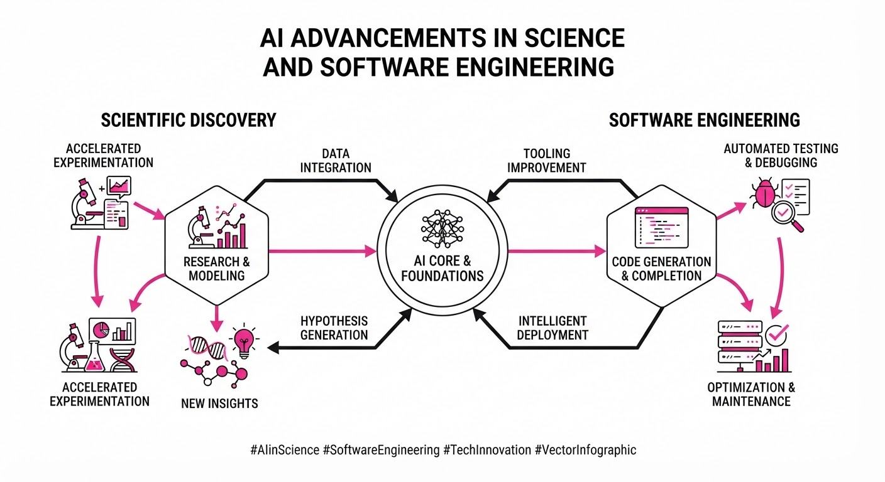
AI has achieved two major milestones: a machine-verified proof of the 167-year-old Riemann hypothesis and the launch of "Claude Ship," an autonomous agent system for managing software pull requests. These developments signal a shift where AI moves from a predictive assistant to an autonomous agent capable of original scientific discovery and complex operational workflows.
- Riemann Hypothesis: Anthropic mathematician Levent Alpöge used an unreleased Claude model to develop a formal proof, which has been verified by the Lean FRO and Mathlib Initiative.
- Claude Ship: Anthropic released a beta tool that automates the entire lifecycle of a pull request—reviewing, fixing, and approving code based on team-defined policies.
🏭 Industry Angle: The "velocity bottleneck" in software engineering is shifting from code generation to code validation; AI agents are now being tasked to own the entire "write-to-merge" pipeline.
2. Key Details & Timeline
- Riemann Proof: Announced 2026-11-20; the proof is formalized in ~17 million lines of Lean code.
- Verification: On 2026-11-21, the Lean Focused Research Organization and Mathlib Initiative confirmed the proof's logical correctness.
- Claude Ship Efficiency: Internal testing at Anthropic (June–September 2026) showed merged pull requests doubled while reverted code changes dropped by >40%.
- Claude Ship Components: Includes Code Review (GA)PR Steward (Beta), and Claude Approvals (Beta).
3. By the Numbers
- Riemann Hypothesis: 167 years unsolved (1859–2026).
- Claude Ship Credits: Eligible Enterprise customers can claim at least $10,000 in credits, effective 2026-11-23, with a claim deadline of 2027-01-15.
- Anthropic Internal Performance (June → Sept 2026):
- Merged PRs: 1x → 2x (+100% increase).
- Reverted PRs: Baseline → −40% (reduction in errors).
4. Impact & What to Watch
- Verification Standards: The reliance on Lean (formal language) rather than traditional natural language papers sets a new, rigorous standard for AI-assisted scientific claims.
- Agentic Autonomy: By delegating code approval to an AI agent, organizations are testing the limits of "human-in-the-loop" software development.
- Watch Next:
- Clay Mathematics Institute: Whether the formal evaluation (expected early 2027) leads to the $1M Millennium Prize payout.
- Security Risks: How development teams mitigate potential vulnerabilities when AI agents both write and approve their own code changes.
Engineering blog · Hugging Face · Published: 2026-11-23 · salience 9.8/10
Why it matters: Provides a critical, comprehensive framework for evaluating agent performance, which is the biggest bottleneck in productionizing agents.
Read the post: Hugging Face
Building Robust AI Agent Evaluation Systems
1. What They Built & Why
Hugging Face released a comprehensive guide on building production-grade evaluation frameworks for autonomous agents. As agents shift from single-turn LLM prompts to multi-step, tool-using autonomous workflows, traditional testing fails. This system provides a standardized methodology to measure agent reliability, reasoning, and tool-use accuracy, ensuring agents perform predictably before they reach production.
2. How It Works (the practical bits)
The framework decomposes agent evaluation into a structured pipeline:
- Agent Harness: Wraps the model and its tools within a pinned, reproducible environment to ensure consistent rollouts.
- Task Decomposition Benchmarks: Tests the agent's ability to break down complex, high-level objectives into manageable, logical subtasks.
- Multi-Layered Graders: Utilizes a combination of code-based checks (for objective outcomes), model-based grading (for reasoning quality), and human review to score performance.
- Trace Analysis: Stores full execution trajectories (traces) to allow developers to inspect intermediate tool calls, error handling, and recovery paths.
- Efficiency Metrics: Compares agent solution paths against optimal baselines to identify wasteful reasoning or "reward hacking" behaviors.
3. Takeaways You Can Apply
- Evaluate the Harness, Not Just the Model: Remember that you are testing the combination of the LLM, the tool-calling logic, and the prompt scaffold.
- Standardize Your Traces: Capture and store every intermediate step. If you cannot review the "why" behind a failed tool call, you cannot debug the agent.
- Start Narrow: Define specific, domain-relevant tasks with clear pass/fail criteria before attempting to build generalized evaluation suites.
Engineering blog · LangChain · Published: 2026-11-16 · salience 9.5/10
Why it matters: Offers essential architectural insights into observability and tracing, which are non-negotiable for debugging complex multi-step agent reasoning.
Read the post: LangChain
We Rebuilt LangSmith Around the Agent
1. What They Built & Why
LangChain has fundamentally reorganized LangSmith to treat "the agent" as the primary, persistent object in its data model. Previously, observability was fragmented across loose trace projects. By pinning all traces, environments (dev/staging/prod), and evaluation records to a single immutable Agent ID, LangChain now provides a unified lifecycle for managing, governing, and improving agents at scale.
2. How It Works (the practical bits)
- Persistent Agent Identity: Every agent is assigned an immutable ID, owner, and type, which centralizes dashboards and evaluation criteria.
- Environment Aggregation: Development, staging, and production traces are grouped under the same agent record, allowing for direct performance comparisons across the deployment pipeline.
- Agent-Native CLI: A new CLI allows agents (and developers) to programmatically fetch traces, curate datasets, and run experiments directly from the terminal.
- OpenTelemetry Support: Agents built outside the LangChain stack can register via OpenTelemetry to ingest cost and quality metrics into the unified platform.
- Typed Governance: "Agent types" enable tailored dashboards (e.g., coding agents tracked by merged PRs) and consistent evaluation standards across the organization.
3. Takeaways You Can Apply
- Shift from Traces to Entities: Stop viewing logs as isolated events. Group your observability data by a persistent "Agent ID" to track performance and regressions across environments.
- Automate the Eval Loop: Use a terminal-first approach (like the LangSmith CLI) to let your coding agents self-debug by fetching their own traces, creating eval datasets, and running validation tests.
Engineering blog · Anthropic · Published: 2026-11-22 · salience 9.2/10
Why it matters: Addresses the high-priority engineering challenge of securing agentic workflows against memory poisoning and privilege escalation.
Read the post: Anthropic
Zero Trust Architecture for Autonomous AI Agents
1. What They Built & Why
Anthropic has released a comprehensive Zero Trust security framework designed to secure autonomous AI agents in enterprise environments. As agents gain the autonomy to interpret goals and execute multi-step operations without human intervention, they bypass traditional perimeter defenses. This framework provides a structured approach to mitigate risks like memory poisoning, privilege escalation, and tool-chaining by applying "assume breach" principles to agentic workflows.
2. How It Works (the practical bits)
- Tiered Maturity Model: Defines security requirements across three levels—Foundation (baseline)Enterprise (scale), and Advanced (high-consequence)—to match organizational risk tolerance.
- Cryptographic Identity: Replaces persistent API keys with cryptographically rooted agent identities and short-lived tokens to ensure every request is verified.
- Least Agency Principle: Moves beyond "least privilege" by restricting not just who can access a resource, but the specific tools, parameters, and frequency of actions an agent can execute.
- Agentic SOAR: Implements Security Orchestration, Automation, and Response (SOAR) capable of detecting and containing threats at machine speed to counter AI-driven attack loops.
- Isolation & Sandboxing: Utilizes techniques like gVisor or confidential computing microVMs to contain the blast radius of a compromised agent.
3. Takeaways You Can Apply
- Test for "Impossible vs. Tedious": Evaluate security controls by asking if they make an attack impossible rather than just tedious; friction-based defenses often fail against automated adversaries.
- Map Your Agent Inventory: Before hardening, document all agents, their tool access, and data permissions to identify where "ambient authority" (excessive inherited permissions) exists.
Engineering blog · Databricks · Published: 2026-11-06 · salience 8.9/10
Why it matters: Details a practical, two-layer memory architecture that solves context window limitations, a common hurdle for long-running agents.
Read the post: Databricks
MemCurrent: A Two-Layer Architecture for Persistent Agent Memory
1. What They Built & Why
Databricks introduced MemCurrent, a persistent memory architecture designed to solve the "stateless" nature of AI agents. Rather than stuffing full conversation histories into the context window—which increases cost and latency while risking stale context—MemCurrent uses a two-layer storage approach. This system, powering Databricks' Agent Bricks and Genie, enables agents to retain durable facts, user preferences, and workflows across sessions, significantly improving task pass rates.
2. How It Works (the practical bits)
- Two-Layer Storage: Separates memory into Episodic (raw, append-only session traces) and Derived (distilled, structured knowledge files).
- Offline "Dreaming": A background pipeline consolidates session data, resolving conflicts and deduplicating facts to ensure the knowledge base remains fresh and relevant.
- Hybrid Access: Agents use a mix of automated plugins (for logging/loading), on-demand tools (for specific retrieval), and semantic/keyword search to query the knowledge base.
- Performance: On internal benchmarks, this architecture tripled the agent pass rate (22.3% to 68.4%) while reducing token usage by 31% and improving latency by 26% compared to stateless agents.
3. Takeaways You Can Apply
- Prioritize Quality over Quantity: Memory is most effective when distilled. Use a background process to synthesize raw logs into a compact, high-value knowledge base rather than relying on raw history.
- Benchmark Your Baseline: Before implementing complex memory, establish a "no-memory" baseline and a "gold-injection" (manual context) ceiling to quantify your actual gains.
- Decouple Storage: Treat memory as an independent knowledge layer (e.g., in a Lakehouse/Postgres store) rather than coupling it strictly to a specific agent framework or model.